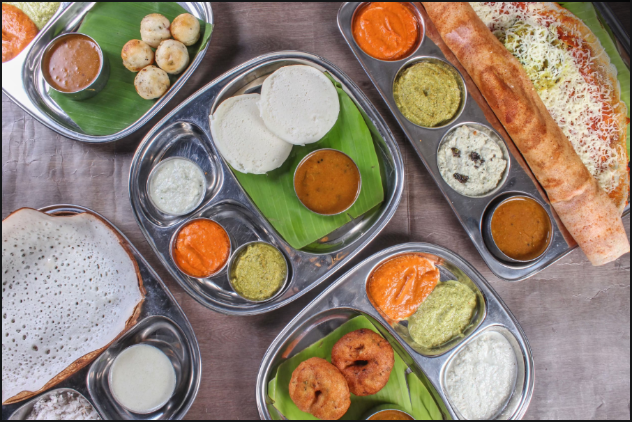
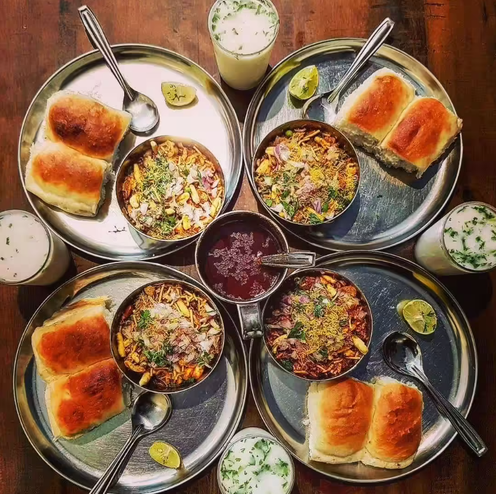
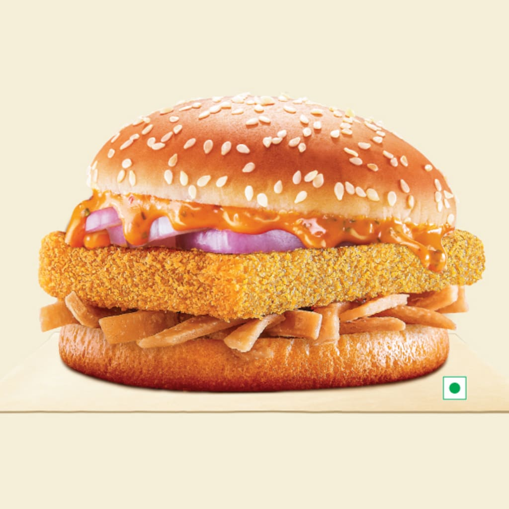
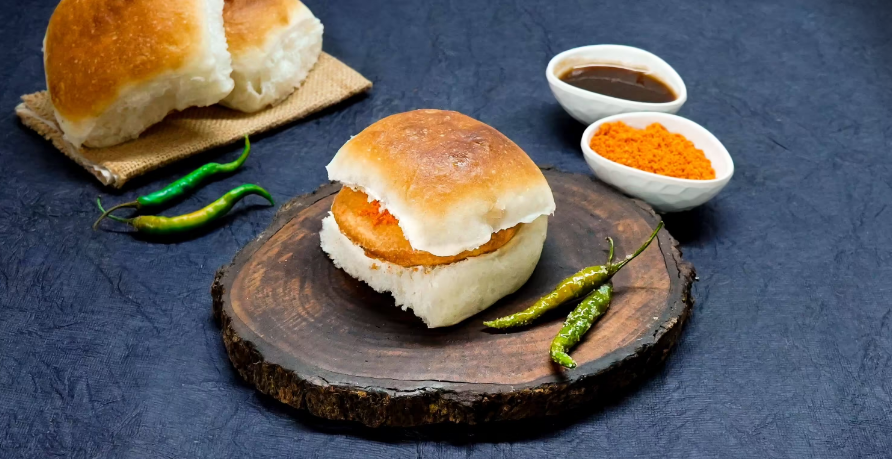
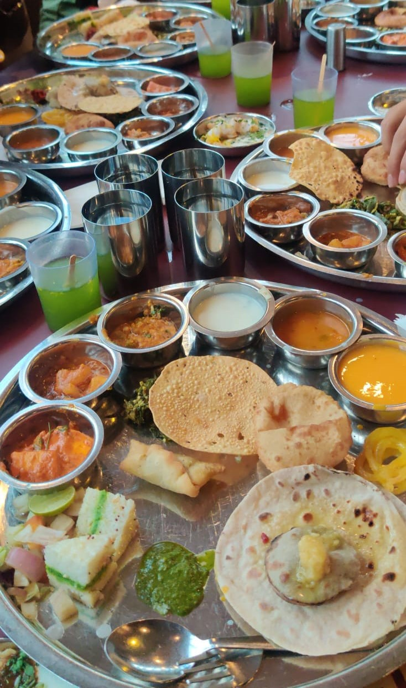
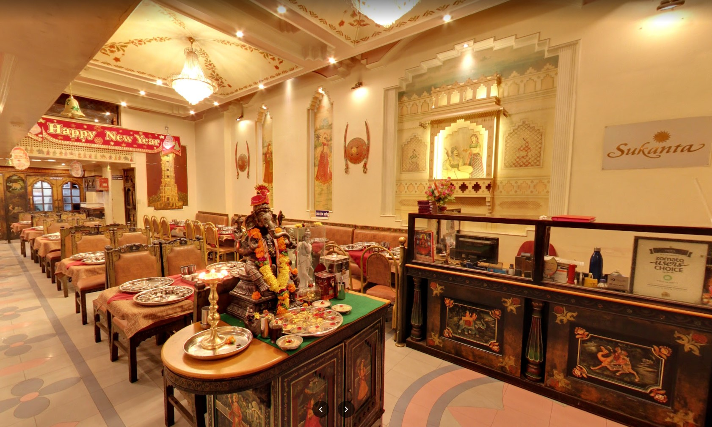

Cold Coffee🧋
"Durga Cafe"
The most famous place in Pune. This cafe has been running since a long time and is famous for its cold coffee. It tastes nothing like any other ordinary cold coffee. It tastes like heaven and nobody wants to have just one cup of that coffee. The best part is it is quite pocket friendly. Other major dishes are pohe, vadapav, misal pav, upma. These four dishes are people’s favourite dishes in Durga.

Location - Mayur Colony Rd, Mayur Colony, Kothrud, Pune, Maharashtra 411038
Idli/Dosa🍽️
"Iddos"
Just neighbouring Cafe Durga is this place called Iddos. It is very famous restaurant for having authentic south indian food. The dosa there is soo tasty that it melts in your mouth as soon as you put it inside. Sambhar is way too good. If anyone wants to have some good south indian food then i would sugget them to go there. It is a bit costly but its worth the price. Uttappam is another delicacy provided by Iddos.
Location - Vishnupuri, Paud Rd, Rambaug Colony, Kothrud, Pune, Maharashtra 411038
Misal Pav🍽️
"Kata Kirr Misal"
Kata Kirr Misal is classically eminent Kolhapuri style Misal, with zesty gravy. In Misal, they serves three types of gravy (rassa), spicy, medium and light. You can choose for any one of them. Spicy rassa gives unexplained satisfaction to spicy Misal lovers. Buttermilk is available to digest spiciness.
Location - Castle Eleganza, Shantabai Kalmadi Path, Bhonde Colony, Erandwane, Pune, Maharashtra 411004
Burger🍔
"Burger King👑"
Burger King India has decided it's time for a new menu,It's a “no terms & conditions” menu, which is available every day, every hour, in every Burger King India restaurant. The Stunner Menu includes vegetarian and egg products, like the new Tikki Twist, new Makhani Burst & King Egg Burgers, new Crispy Veg Wrap, new Peri Peri Rice Bowl and new Veg Crunchy Volcano, all at Rs 50 each.
Location - Burger King Paud Road, Pune, Paud Rd Ground & Mezzanine Level Survey No 128, 1A, Rambaug Colony, Kothrud, Pune, Maharashtra 411038
Vada Pav/ Sandwich🥪
"Maharaj Vada"
The Maharaja Vada Pav is similar to the normal Vada Pav, But it is extra spicy and delicious.In this a deep fried potato dumpling which is perfectly fried is placed inside a bread bun(pav) sliced almost in half through the middle.
Location - Maharaja Vada Pav, 1, Rahul Nagar Rd, Rahul Nagar, Kothrud, Pune, Maharashtra 411038
Ice Cream🍦
"Rajmandir Ice Cream"
Speciality Guava "Peru" ice cream.Earlier Naturals was the only chain that specialized in natural fruit flavours. Found the Peru Icecream at RajMandir quite innovative. With a blend of chilly and salt tinge added to the guava flavor it reminds of the good old days when we used to cut a guava and apply chilli-salt to it before eating the same. Can be nostalgic. Tried a couple of other flavours as well. The coffee flavor is also worth recommending.Has good outdoor space outside the building and parking is also available if you avoid rush time. Good for a post dinner summer evening bite of ice-cream.

Location - 9, DP Rd, Shivatara Garden Society, Chaitanya Nagar, Kothrud, Pune, Maharashtra 411038
Best vegetarian Thali🌶️
"Sukanta Veg Indian Thali🌹"
The Ethnic taste of North Indian food can be tasted. The service is very quick.Ambience is awesome and royal, a complete AC dining. Its clean n tables are nicely prepared. Do try it once.and about food they maintain high quality standards so customer should get hygienic delicious food as low on spice high in taste, lots of variety starting from welcome drinks, farsan, veggies, rotis, sweets...yummy. Make sure you have enough space in your tummy. Have visited this place 2-3 times, what I liked the most is dhokla sandwich, amras puri, all the farsan items, The summer menu (aamras and other items) are the Best.  Location - 9, DP Rd, Shivatara Garden Society, Chaitanya Nagar, Kothrud, Pune, Maharashtra 411038